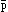

Introduction
By Bertrand Russell
Mr Wittgenstein's Tractatus Logico-Philosophicus,
whether or not it prove to give the ultimate truth on the
matters with which it deals, certainly deserves, by its breadth
and scope and profundity, to be considered an important event
in the philosophical world. Starting from the principles of
Symbolism and the relations which are necessary between words
and things in any language, it applies the result of this
inquiry to various departments of traditional philosophy,
showing in each case how traditional philosophy and traditional
solutions arise out of ignorance of the principles of Symbolism
and out of misuse of language.
The logical structure of propositions and the nature of
logical inference are first dealt with. Thence we pass
successively to Theory of Knowledge, Principles of Physics,
Ethics, and finally to the Mystical (das Mystische).
In order to understand Mr Wittgenstein's book, it is
necessary to realize what is the problem with which he is
concerned. In the part of his theory which deals with
Symbolism he is concerned with the conditions which would have
to be fulfilled by a logically perfect language. There are
various problems as regards language. First, there is the
problem what actually occurs in our minds when we use language
with the intention of meaning something by it; this problem
belongs to psychology. Secondly, there is the problem as to
what is the relation subsisting between thoughts, words, or
sentences, and that which they refer to or mean; this problem
belongs to epistemology. Thirdly, there is the problem of
using sentences so as to convey truth rather that falsehood;
this belongs to the special sciences dealing with the
subject-matter of the sentences in question. Fourthly, there
is the question: what relation must one fact (such as a
sentence) have to another in order to be capable of
being a symbol for that other? This last is a logical
question, and is the one with which Mr Wittgenstein is
concerned. He is concerned with the conditions for
accurate Symbolism, i.e. for Symbolism in which a
sentence `means' something quite definite. In practice,
language is always more or less vague, so that what we assert
is never quite precise. Thus, logic has two problems to deal
with in regard to Symbolism: (1) the conditions for sense
rather than nonsense in combinations of words; (2) the
conditions for uniqueness of meaning or reference in symbols or
combinations of symbols. A logically perfect language has
rules of syntax which prevent nonsense, and has single symbols
which always have a definite and unique meaning. Mr
Wittgenstein is concerned with the conditions for a logically
perfect language -- not that any language is logically perfect,
or that we believe ourselves capable, here and now, of
constructing a logically perfect language, but that the whole
function of language is to have meaning, and it only fulfills
this function in proportion as it approaches to the ideal
language which we postulate.
The essential business of language is to assert or deny
facts. Given the syntax of language, the meaning of a
sentence is determined as soon as the meaning of the component
words is known. In order that a certain sentence should assert
a certain fact there must, however the language may be
constructed, be something in common between the structure of
the sentence and the structure of the fact. This is perhaps
the most fundamental thesis of Mr Wittgenstein's theory. That
which has to be in common between the sentence and the fact
cannot, he contends, be itself in turn said in
language. It can, in his phraseology, only be shown,
not said, for whatever we may say will still need to have the
same structure.
The first requisite of an ideal language would be that there
should be one name for every simple, and never the same name
for two different simples. A name is a simple symbol in the
sense that it has no parts which are themselves symbols. In a
logically perfect language nothing that is not simple will have
a simple symbol. The symbol for the whole will be a
``complex'', containing the symbols for the parts. In speaking
of a ``complex'' we are, as will appear later, sinning against
the rules of philosophical grammar, but this is unavoidable at
the outset. ``Most propositions and questions that have been
written about philosophical matters are not false but
senseless. We cannot, therefore, answer questions of this kind
at all, but only state their senselessness. Most questions and
propositions of the philosopohers result from the fact that we
do not understand the logic of our language. They are of the
same kind as the question whether the Good is more or less
identical than the Beautiful'' (4.003). What is complex in the world is
a fact. Facts which are not compounded of other facts are what
Mr Wittgenstein calls Sachverhalte, whereas a fact which
may consist of two or more facts is a Tatsache: thus,
for example ``Socrates is wise'' is a Sachverhalt, as
well as a Tatsache, whereas ``Socrates is wise and Plato
is his pupil'' is a Tatsache but not a
Sachverhalt.
He compares linguistic expression to projection in
geometry. A geometrical figure may be projected in many ways:
each of these ways corresponds to a different language, but the
projective properties of the original figure remain unchanged
whichever of these ways may be adopted. These projective
properties correspond to that which in his theory the
proposition and the fact must have in common, if the
proposition is to assert the fact.
In certain elementary ways this is, of course, obvious. It
is impossible, for example, to make a statement about two men
(assuming for the moment that the men may be treated as
simples), without employing two names, and if you are going to
assert a relation between the two men it will be necessary that
the sentence in which you make the assertion shall establish a
relation between the two names. If we say ``Plato loves
Socrates'', the word ``loves'' which occurs between the word
``Plato'' and the word ``Socrates'' establishes a certain
relation between these two words, and it is owing to this fact
that our sentence is able to assert a relation between the
persons named by the words ``Plato'' and ``Socrates''. ``We
must not say, the complex sign `aRb' says that `a
stands in a certain relation R to b'; but we must
say, that `a' stands in a certain relation to
`b' says that aRb' (3.1432).
Mr Wittgenstein begins his theory of Symbolism with the
statement (2.1): ``We make to
ourselves pictures of facts.'' A picture, he says, is a model
of the reality, and to the objects in the reality correspond
the elements of the picture: the picture itself is a fact. The
fact that things have a certain relation to each other is
represented by the fact that in the picture its elements have a
certain relation to one another. ``In the picture and the
pictured there must be something identical in order that the
one can be a picture of the other at all. What the picture
must have in common with reality in order to be able to
represent it after its manner -- rightly or falsely -- is its
form of representation'' (2.161, 2.17).
We speak of a logical picture of a reality when we wish to
imply only so much resemblance as is essential to its being a
picture in any sense, that is to say, when we wish to imply no
more than identity of logical form. The logical picture of a
fact, he says, is a Gedanke. A picture can correspond
or not correspond with the fact and be accordingly true or
false, but in both cases it shares the logical form with the
fact. The sense in which he speaks of pictures is illustrated
by his statement: ``The gramophone record, the musical thought,
the score, the waves of sound, all stand to one another in that
pictorial internal relation which holds between language and the
world. To all of them the logical structure is common. (Like
the two youths, their two horses and their lilies in the
story. They are all in a certain sense one)'' (4.014). The possibility of a
proposition representing a fact rests upon the fact that in it
objects are represented by signs, but are themselves present in
the proposition as in the fact. The proposition and the fact
must exhibit the same logical ``manifold,'' and this cannot be
itself represented since it has to be in common between the
fact and the picture. Mr Wittgenstein maintains that
everything properly philosophical belongs to what can only be
shown, or to what is in common between a fact and its logical
picture. It results from this view that nothing correct can be
said in philosophy. Every philosophical proposition is bad
grammar, and the best that we can hope to achieve by
philosophical discussion is to lead people to see that
philosophical discussion is a mistake. ``Philosophy is not one
of the natural sciences. (The word `philosophy' must mean
something which stands above or below, but not beside the
natural sciences.) The object of philosophy is the logical
clarification of thoughts. Philosophy is not a theory but an
activity. A philosophical work consists essentially of
elucidations. The result of philosophy is not a number of
`philosophical propositions,' but to make propositions clear.
Philosophy should make clear and delimit sharply the thoughts
which otherwise are, as it were, opaque and blurred'' (4.111 and 4.112). In accordance with this
principle the things that have to be said in leading the reader
to understand Mr Wittgenstein's theory are all of them things
which that theory itself condemns as meaningless. With this
proviso we will endeavour to convey the picture of the world
which seems to underlie his system.
The world consists of facts: facts cannot strictly speaking
be defined, but we can explain what we mean by saying that
facts are what makes propositions true, or false. Facts may
contain parts which are facts or may contain no such parts; for
example: ``Socrates was a wise Athenian,'' consists of the two
facts, ``Socrates was wise,'' and ``Socrates was an
Athenian.'' A fact which has no parts that are facts is called
by Mr Wittgenstein a Sachverhalt. This is the same
thing that he calls an atomic fact. An atomic fact, although it
contains no parts that are facts, nevertheless does contain
parts. If we may regard ``Socrates is wise'' as an atomic fact
we perceive that it contains the constituents ``Socrates'' and
``wise.'' If an atomic fact is analyzed as fully as possibly
(theoretical, not practical possibility is meant) the
constituents finally reached may be called ``simples'' or
``objects.'' It is a logical necessity demanded by theory,
like an electron. His ground for maintaining that there must be
simples is that every complex presupposes a fact. It is not
necessarily assumed that the complexity of facts is finite;
even if every fact consisted of an infinite number of atomic
facts and if every atomic fact consisted of an infinite number
of objects there would still be objects and atomic facts (4.2211). The assertion that there is a
certain complex reduces to the assertion that its constituents
are related in a certain way, which is the assertion of a
fact: thus if we give a name to the complex the name only
has meaning in virtue of the truth of a certain proposition,
namely the proposition asserting the relatedness of the
constituents of the complex. Thus the naming of complexes
presupposes propositions, while propositions presupposes the
naming of simples. In this way the naming of simples is shown
to be what is logically first in logic.
The world is fully described if all atomic facts are known,
together with the fact that these are all of them. The world
is not described by mearly naming all the objects in it; it is
necessary also to know the atomic facts of which these objects
are constituents. Given this total of atomic facts, every true
proposition, however complex, can theoretically be inferred. A
proposition (true or false) asserting an atomic fact is called
an atomic proposition. All atomic propositions are logically
independent of each other. No atomic proposition implies any
other or is inconsistent with any other. Thus the whole
business of logical inference is concerned with proposition
which are not atomic. Such propositions may be called
molecular.
Wittgenstein's theory of molecular propositions turns upon
his theory of the construction of truth-functions.
A truth-function of a proposition p is a proposition
containing p and such that its truth or falsehood
depends only upon the truth or falsehood of p, and
similarly a truth-function of several propositions p, q,
r, . . . is one containing p, q, r . . . and such
that its truth or falsehood depends only upon the truth or
falsehood of p, q, r . . .. It might seem at first
sight as though there were other functions of propositions
besides truth-functions; such, for example, would be ``A
believes p,'' for in general A will believe some true
propositions and some false ones: unless he is an exceptionally
gifted individual, we cannot infer that p is true from
the fact that he believes it or that p is false from the
fact that he does not believe it. Other apparent exceptions
would be such as ``p is a very complex proposition'' or
``p is a proposition about Socrates.'' Mr Wittgenstein
maintains, however, for reasons which will appear presently,
that such exceptions are only apparent, and that every function
of a proposition is really a truth-function. It follows that
if we can define truth-functions generally, we can obtain a
general definition of all propositions in terms of the original
set of atomic propositions. This Wittgenstein proceeds to
do.
It has been shown by Dr. Sheffer (Trans. Am. Math.
Soc., Vol. XIV. pp. 481-488) that all truth-functions of a
given set of propositions can be constructed out of either of
the two functions ``not-p or not-q'' or
``not-p and not-q''. Wittgenstein makes use of
the latter, assuming a knowledge of Dr. Sheffer's work. The
manner in which other truth-functions are constructed out of
``not-p and not-q'' is easy to see.
``Not-p and not-p'' is equivalent to
``not-p,'' hence we obtain a definition of negation in
terms of our primitive function: hence we can define ``p
or q,'' since this is the negation of ``not-p and
not-q,'' i.e. of our primitive function. The
development of other truth-functions out of ``not-p''
and ``p or q'' is given in detail at the
beginning of Principia Mathematica. This gives all that
is wanted when the propositions which are arguments to our
truth-function are given by enumeration. Wittgenstein,
however, by a very interesting analysis succeeds in extending
the process to general propositions, i.e. to cases where
the propositions which are arguments to our truth-function are
not given by enumeration but are given as all those satisfying
some condition. For example, let fx be a propositional
function (i.e. a function whose values are
propositions), such as ``x is human'' -- then the various
values of fx form a set of propositions. We may extend
the idea ``not-p and not-q'' so as to apply to
simultaneous denial of all the propositions which are values of
fx. In this way we arrive at the proposition which is
ordinarily represented in mathematical logic by the words
"fx is false for all values of x.'' The negation
of this would be the proposition ``There is at least one
x for which fx is true'' which is represented by
``( x) . fx.''
If we had started with not-fx
instead of fx we should have arrived at the proposition
``fx is true for all values of x'' which is
represented by ``(x) .fx. '' Wittgenstein's method of
dealing with general propositions [i.e.
``(x) . fx'' and ``(x) .fx'']
differs from previous methods by the fact that the generality
comes only in specifying the set of propositions concerned, and
when this has been done the building up of truth-functions
proceeds exactly as it would in the case of a finite number of
enumerated arguments p, q, r . . ..
x) . fx.''
If we had started with not-fx
instead of fx we should have arrived at the proposition
``fx is true for all values of x'' which is
represented by ``(x) .fx. '' Wittgenstein's method of
dealing with general propositions [i.e.
``(x) . fx'' and ``(x) .fx'']
differs from previous methods by the fact that the generality
comes only in specifying the set of propositions concerned, and
when this has been done the building up of truth-functions
proceeds exactly as it would in the case of a finite number of
enumerated arguments p, q, r . . ..
Mr Wittgenstein's explanation of his symbolism at this
point is not quite fully given in the text. The symbol he uses
is
[,  , N()].
The following is the explanation of this
symbol:
, N()].
The following is the explanation of this
symbol:
- stands for all atomic propositions.
- stands for any set of propositions.
- N() stands for the negation of all the propositions
making up
 .
.
The whole symbol
[, , N()]
means whatever can be obtained
by taking any selection of atomic propositions, negating them
all, then taking any selection of the set of propositions now
obtained, together with any of the originals -- and so on
indefinitely. This is, he says, the general truth-function and
also the general form of proposition. What is meant is
somewhat less complicated than it sounds. The symbol is
intended to describe a process by the help of which, given the
atomic propositions, all others can be manufactured. The
process depends upon:
- (a) Sheffer's proof that all truth-functions can be obtained
out of simultaneous negation, i.e. out of ``not-p and
not-q'';
- (b) Mr Wittgenstein's theory of the derivation of general
propositions from conjunctions and disjunctions;
- (c) The assertion that a proposition can only occur in another
proposition as argument to a truth-function. Given these three
foundations, it follows that all propositions which are not atomic can
be derived from such as are, buy a uniform process, and it is this
process which is indicated by Mr Wittgenstein's symbol.
From this uniform method of construction we arrive at an
amazing simplification of the theory of inference, as well as a
definition of the sort of propositions that belong to logic.
The method of generation which has just been described, enables
Wittgenstein to say that all propositions can be constructed in
the above manner from atomic propositions, and in this way the
totality of propositions is defined. (The apparent exceptions
which we mentioned above are delt with in a manner which we
shall consider later.) Wittgenstein is enabled to assert that
propositions are all that follows from the totality of atomic
propositions (together with the fact that it is the totality of
them); that a proposition is always a truth-function of atomic
propositions; and that if p follows from q the
meaning of p is contained in the meaning of q,
from which of course it results that nothing can be deduced
from an atomic proposition. All the propositions of logic, he
maintains, are tautologies, such, for example, as ``p or
not p.''
The fact that nothing can be deduced from an atomic
proposition has interesting applications, for example, to
causality. There cannot, in Wittgenstein's logic, be any such
thing as a causal nexus. ``The events of the future,'' he
says, ``cannot be inferred from those of the present.
Superstition is the belief in the causal nexus.'' That the sun
will rise to-morrow is a hypothesis. We do not in fact know
whether it will rise, since there is no compulsion according to
which one thing must happen because another happens.
Let us now take up another subject -- that of names. In
Wittgenstein's theoretical logical language, names are only
given to simples. We do not give two names to one thing, or
one name to two things. There is no way whatever, according to
him, by which we can describe the totality of things that can
be names, in other words, the totality of what there is in the
world. In order to be able to do this we should have to know
of some property which must belong to every thing by a logical
necessity. It has been sought to find such a property in
self-identity, but the conception of identity is subjected by
Wittgenstein to a destructive criticism from which there seems
no escape. The definition of identity by means of the identity
of indiscernibles is rejected, because the identity of
indiscernibles appears to be not a logically necessary
principle. According to this principle x is identical
with y if every property of x is a property of
y; but it would, after all be logically possible for
two things to have exactly the same properties. If this does
not in fact happen that is an accidental characteristic of the
world, not a logically necessary characteristic, and accidental
characteristics of the world must, of course, not be admitted
into the structure of logic. Mr Wittgenstein accordingly
banishes identity and adopts the convention that different
letters are to mean different things. In practice, identity is
needed as between a name and a description or between two
descriptions. It is needed for such propositions as ``Socrates
is the philosopher who drank the hemlock,'' or ``The even prime
is the next number after 1.'' For such uses of identity it is
easy to provide on Wittgenstein's system.
The rejection of identity removes one method of speaking of
the totality of things, and it will be found that any other
method that may be suggested is equally fallacious: so, at
least, Wittgenstein contends and, I think, rightly. This
amounts to saying that ``object'' is a pseudo-concept. To say
``x is an object'' is to say nothing. It follows from
this that we cannot make such statements as ``there are more
than three objects in the world,'' or ``there are an infinite
number of objects in the world.'' Objects can only be
mentioned in connexion with some definite property. We can say
``there are more than three objects which are human,'' or
``there are more than three objects which are red,'' for in
these statements the word object can be replaced by a variable
in the language of logic, the variable being one which
satisfies in the first case the function ``x is human'';
in the second the function ``x is red.'' But when we
attempt to say ``there are more than three objects,'' this
substitution of the variable for the word ``object'' becomes
impossible, and the proposition is therefore seen to be
meaningless.
We here touch one instance of Wittgenstein's fundamental
thesis, that it is impossible to say anything about the world
as a whole, and that whatever can be said has to be about
bounded portions of the world. This view may have been
originally suggested by notation, and if so, that is much in
its favor, for a good notation has a subtlety and
suggestiveness which at times make it seem almost like a live
teacher. Notational irregularities are often the first sign of
philosophical errors, and a perfect notation would be a
substitute for thought. But although notation may have first
suggested to Mr Wittgenstein the limitation of logic to things
within the world as opposed to the world as a whole, yet the
view, once suggested, is seen to have much else to recommend
it. Whether it is ultimately true I do not, for my part,
profess to know. In this Introduction I am concerned to
expound it, not to pronounce upon it. According to this view
we could only say things about the world as a whole if we could
get outside the world, if, that is to say, it ceased to be for
us the whole world. Our world may be bounded for some superior
being who can survey it from above, but for us, however finite
it may be, it cannot have a boundary, since it has nothing
outside it. Wittgenstein uses, as an analogy, the field of
vision. Our field of vision does not, for us, have a visual
boundary, just because there is nothing outside it, and in like
manner our logical world has no logical boundary because our
logic knows of nothing outside it. These considerations lead
him to a somewhat curious discussion of Solipsism. Logic, he
says, fills the world. The boundaries of the world are also
its boundaries. In logic, therefore, we cannot say, there is
this and this in the world, but not that, for to say so would
apparently presuppose that we exclude certain possibilities,
and this cannot be the case, since it would require that logic
should go beyond the boundaries of the world as if it could
contemplate these boundaries from the other side also. What we
cannot think we cannot think, therefore we also cannot say what
we cannot think.
This, he says, gives the key to solipsism. What Solipsism
intends is quite correct, but this cannot be said, it can only
be shown. That the world is my world appears in the
fact that the boundaries of language (the only language I
understand) indicate the boundaries of my world. The
metaphysical subject does not belong to the world but is a
boundary of the world.
We must take up next the question of molecular propositions
which are at first sight not truth-functions, of the
propositions that they contain, such, for example, as ``A
believe p.''
Wittgenstein introduces this subject in the statement of
his position, namely, that all molecular functions are
truth-functions. He says (5.54):
``In the general propositional form, propositions occur in a
proposition only as bases of truth-operations.'' At first
sight, he goes on to explain, it seems as if a propositions
could also occur in other ways, e.g. ``A believes
p.'' Here it seems superficially as if the proposition
p stood in a sort of relation to the object A. ``But it
is clear that 'A believe that p,' 'A thinks p,'
'A says p' are of the form enumerated arguments p, q,
r . . .'p says p'; and here we have no
co-ordination of a fact and an object, but a co-ordination of
facts by means of a co-ordination of their objects'' (5.542).
What Mr Wittgenstein says here is said so shortly that its
point is not likely to be clear to those who have not in mind
the controversies with which he is concerned. The theory which
which he is disagreeing will be found in my articles on the
nature of truth and falsehood in Philosophical Essays
and Proceedings of the Aristotelian Society, 1906-7.
The problem at issue is the problem of the logical form of
belief, i.e. what is the schema representing what occurs
when a man believes. Of course, the problem applies not only to
belief, but also to a host of other mental phenomena which may
be called propositional attitudes: doubting, considering,
desiring, etc. In all these cases it seems natural to express
the phenomenon in the form ``A doubts p,'' ``A desires
p,'' etc., which makes it appear as though we were
dealing with a relation between a person and a proposition.
This cannot, of course, be the ultimate analysis, since persons
are fictions and so are propositions, except in the sense in
which they are facts on their own account. A proposition,
considered as a fact on its own account, may be a set of words
which a man says over to himself, or a complex image, or train
of images passing through his mind, or a set of incipient
bodily movements. It may be any one of innumerable different
things. The proposition as a fact on its own account, for
example the actual set of words the man pronounces to himself,
is not relevant to logic. What is relevant to logic is that
common element among all these facts, which enables him, as we
say, to mean the fact which the proposition asserts. To
psychology, of course, more is relevant; for a symbol does not
mean what it symbolizes in virtue of a logical relation alone,
but in virtue also of a psychological relation of intention, or
association or what-not. The psychological part of meaning,
however, does not concern the logician. What does concern him
in this problem of belief is the logical schema. It is clear
that, when a person believes a proposition, the person,
considered as a metaphysical subject, does not have to be
assumed in order to explain what is happening. What has to be
explained is the relation between the set of words which is the
proposition considered as a fact on its own account, and the
``objective'' fact which makes the proposition true or false.
This reduces ultimately to the question of the meaning of
propositions, that is to say, the meaning of propositions is
the only non-psychological portion of the problem involved in
the analysis of belief. This problem is simply one of a
relation of two facts, namely, the relation between the series
of words used by the believer and the fact which makes these
words true or false. The serious of words is a fact just as
much as what makes it true or false is a fact. The relation
between these two facts is not unanalyzable, since the meaning
of a proposition results from the meaning of its constituent
words. The meaning of the series of words which is a
proposition is a function of the meaning of the separate
words. Accordingly, the proposition as a whole does not really
enter into what has to be explained in explaining the meaning
of a propositions. It would perhaps help to suggest the point
of view which I am trying to indicate, to say that in the cases
which have been considering the proposition occurs as a fact,
not as a proposition. Such a statement, however, must not be
taken too literally. The real point is that in believing,
desiring, etc., what is logically fundamental is the relation
of a proposition considered as a fact to the fact which
makes it true or false, and that this relation of two facts is
reducible to a relation of their constituents. Thus the
proposition does not occur at all in the same sense in which it
occurs in a truth-function.
There are some respects, in which, as it seems to me, Mr
Wittgenstein's theory stands in need of greater technical
development. This applies in particular to his theory of
number (6.02 ff.) which, as it
stands, is only capable of dealing with finite numbers. No
logic can be considered adequate until it has been shown to be
capable of dealing with transfinite numbers. I do not think
there is anything in Mr Wittgenstein's system to make it
impossible for him to fill this lacuna.
More interesting than such questions of comparative detail
is Mr Wittgenstein's attitude towards the mystical. His
attitude upon this grows naturally out of his doctrine in pure
logic, according to which the logical proposition is a picture
(true or false) of the fact, and has in common with the fact a
certain structure. It is this common structure which makes it
capable of being a picture of the fact, but the structure
cannot itself be put into words, since it is a structure
of words, as well as of the fact to which they refer.
Everything, therefore, which is involved in the very idea of the
expressiveness of language must remain incapable of being
expressed in language, and is, therefore, inexpressible in a
perfectly precise sense. This inexpressible contains,
according to Mr Wittgenstein, the whole of logic and
philosophy, he says, would be to confine oneself to
propositions of the sciences, stated with all possible
clearness and exactness, leaving philosophical assertions to
the learner, and proving to him, whenever he made them, that
they are meaningless. It is true that the fate of Socrates
might befall a man who attempted this method of teaching, but
we are not to be deterred by that fear, if it is the only right
method. It is not this that causes some hesitation in
accepting Mr Wittgenstein's position, in spite of the very
powerful arguments which he brings to its support. What causes
hesitation is the fact that, after all, Mr Wittgenstein manages
to say a good deal about what cannot be said, thus suggesting
to the sceptical reader that possibly there may be some
loophole through a hierarchy of languages, or by some other
exit. The whole subject of ethics, for example, is placed by
Mr Wittgenstein in the mystical, inexpressible region.
Nevertheless he is capable of conveying his ethical opinions.
His defence would be that what he calls the mystical can be
shown, although it cannot be said. It may be that this defence
is adequate, but, for my part, I confess that it leaves me with
acertain sense of intellectual discomfort.
There is one purely logical problem in regard to which these
difficulties are peculiarly acute. I mean the problem of
generality. In the theory of generality it is necessary to
consider all propositions of the form fx where fx
is a given propositional functions. This belongs to the part
of logic which can be expressed, according to Mr Wittgenstein's
system. But the totality of possible values of x which
might seem to be involved in the totality of propositions of
the form fx is not admitted by Mr Wittgenstein among the
things that can be spoken of, for this is no other than the
totality of things in the world, and thus involves the attempt
to conceive the world as a whole; ``the feeling of the world as
a bounded whole is the mystical''; hence the totality of the
values of x is mystical (6.45). This is expressly argued when Mr
Wittgenstein denies that we can make propositions as to how may
things there are in the world, as for example, that there are
more than three.
These difficulties suggest to my mind some such possibility
as this: that every language has, as Mr Wittgenstein says, a
structure concerning which in the language, nothing can
be said, but that there may be another language dealing with
the structure of the first language, and having itself a new
structure, and that to this hierarchy of languages there may be
no limit. Mr Wittgenstein would of course reply that his whole
theory is applicable unchanged to the totality of such
languages. The only retort would be to deny that there is any
such totality. The totalities concerning which Mr Wittgenstein
holds that it is impossible to speak logically are nevertheless
thought by him to exist, and are the subject-matter of his
mysticism. The totality resulting from our hierarchy would be
not merely logically inexpressible, but a fiction, a mere
delusion, and in this way the supposed sphere of the mystical
would be abolished. Such a hypothesis is very difficult, and I
can see objections to it which at the moment I do not know how
to answer. Yet I do not see how any easier hypothesis can
escape from Mr Wittgenstein's conclusions. Even if this very
difficult hypothesis should prove tenable, it would leave
untouched a very large part of Mr Wittgenstein's theory, though
possibly not the part upon which he himself would wish to lay
most stress. As one with a long experience of the difficulties
of logic and of the deceptiveness of theories which seem
irrefutable, I find myself unable to be sure of the rightness
of a theory, mearly on the ground that I cannot see any point
on which it is wrong. But to have constructed a theory of
logic which is not at any point obviously wrong is to have
achieved a work of extraordinary difficulty and importance.
This merit, in my opinion, belongs to Mr Wittgenstein's book,
and makes it one which no serious philosopher can afford to
neglect.
Bertrand Russell
May 1922